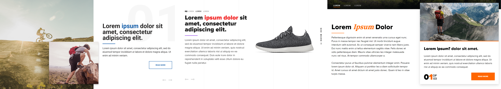

LIA CODES
OVERVIEW
Theme Engine is a WordPress multisite meant as a subscription service for people who want a great looking website without the pricetag of a custom site. The idea is a user can sign up for Theme Engine and have access to a wide variety of highly customizable themes they can seamlessly change between. Utilizing modules the users are able to drag and drop content to design their own pages and change details like image placement and color schemes.
NITTY GRITTY
The multisite starts with Genesis Framework as the parent theme and a custom child theme referred to as the “base theme”. Then in addition there is another child theme for each theme option. The base theme contains everything the themes need like functions.php, page template files, core CSS, custom post types, and all Advanced Custom Fields hardcoded to ensure content remains the same when switching between themes. That way each theme shares HTML, ACF, PHP and only has unique CSS. Then, using some unique PHP each child theme imports those files from the base theme. An example:
define('BASE_THEME', ABSPATH.'wp-content/themes/te-base/');
require_once(BASE_THEME.'functions.php');
add_action('genesis_doctype','child_doctype');
function child_doctype(){
include_once(BASE_THEME.'/assets/css/style.php');
}
 a home page example of theme #4
a home page example of theme #4
EXAMPLES
 an example of each theme's blog page using the same html and acf but different css
an example of each theme's blog page using the same html and acf but different css
For the blog pages shown above; The user has the option to select the colors on the page as well as options such as how many blogs are shown per page, what content to show between the featured image, publish date, title, excerpt, and read more button. They can even customize what the read more button says! Another example is the accordion page shown below:
 these three screenshots are of the same slider module with the same content- just with different options selected.This was truly one of the most fun projects I’ve worked on because of the foresight it took to plan for such interchangeable themes and the three step like structure of the files.